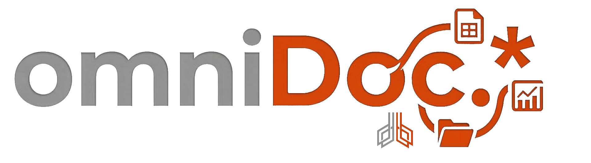
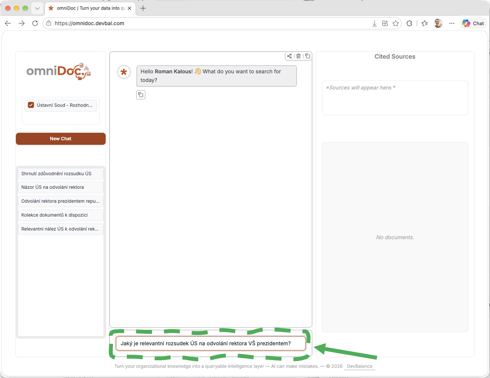
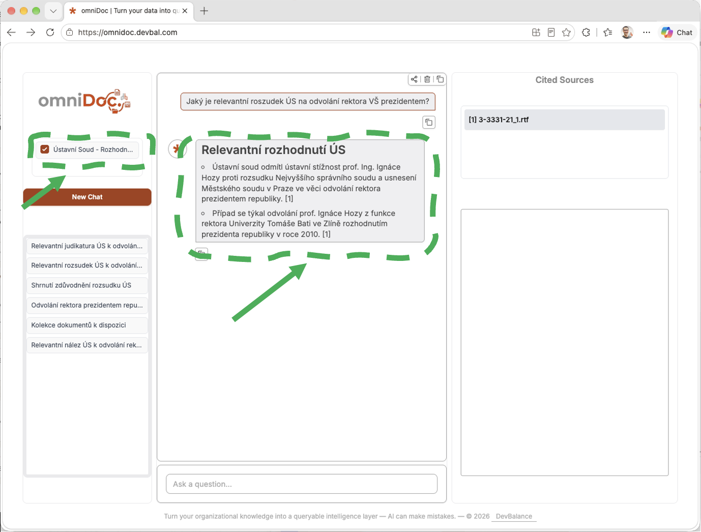
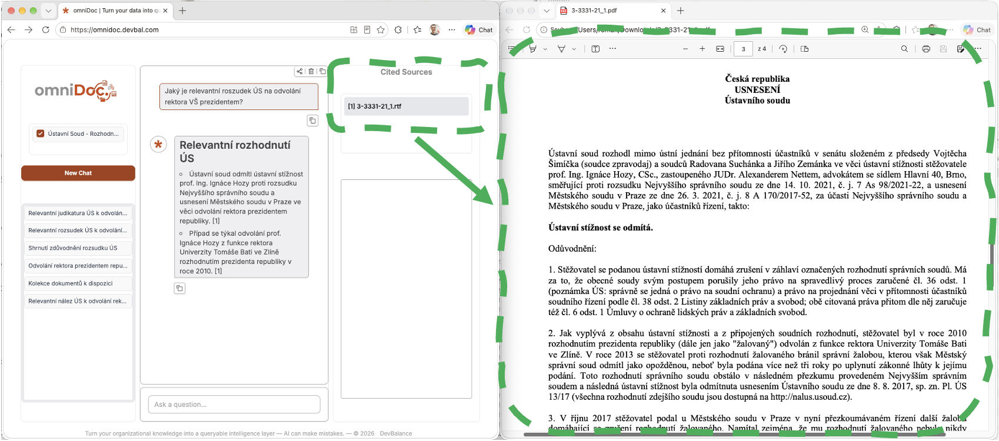

Co je (a co není) omniDoc. a jak ho používat v základním prostředí
omniDoc. je nástroj pro inteligentní vyhledávání a interpretaci obsahu z velkého množství různých typů souborů ve vaší knihovně, projektových složkách, na SharePointu (PDF, Word, skeny, e-maily).
Do znalostí omniDoc. můžu nahrávat důvěrné materiály – ať už v rámci citlivých dat zakázek (např. detaily soukromých transakcí nebo informace podléhající požadavkům na utajení), nebo osobních dat (např. rodná čísla, data narození, zdravotní informace) – uložení a zpracování dat probíhá na důvěrných serverech.
Příklad použití
omniDoc. má například ve znalostech desítky PDF s podklady k projektu stavby a vybavení nové haly – návrhy, vizualizace, smlouvy, dokumentaci, dodací lhůty, požadavky, podklady dodavatelů atd.
S omniDoc. můžu položit otázku „Jaký je termín pro dodávku zateplení?“ anebo „Sepiš mi ve formě tabulky všechny hlavní termíny včetně očekávané výše faktur za odpovídající období (podle nabídek)“.
omniDoc. není ChatGPT nad internetem
omniDoc. nehledá odpovědi obecně na webu, ale pracuje primárně s dokumenty, které má ve svých zdrojích (zdroje mu připravuje váš tým nebo firma). Jeho cílem není generovat obecné znalosti, ale pomáhat orientovat se ve vlastních podkladech.
omniDoc. zatím není připravený na dlouhé konverzace
omniDoc. má nejlepší výsledky při první odpovědi. Lepší než rozvíjet rozsáhlé diskuse je dotaz/vyhledání a použití výstupu.
omniDoc. není samospásný všeználek
Právník, projektant nebo daňový poradce stále odpovídá za odborný závěr. omniDoc. pomáhá rychle najít relevantní informace, souvislosti a důkazy ve zdrojích, ale nerozhoduje za vás.
omniDoc. není generátor obrázků
omniDoc. sice rozumí obrázkům („vidí“ je ve zdrojích), ale neumí generovat obrázky, takže (zatím) neumí provést dotaz typu „zakresli mapu dodavatelského řetězce podle podkladových smluv u situace XXX“.
Jak mám omniDoc. používat?
Rozhraní chatu
omniDoc. má jednoduché rozhraní chatu – základní vstup pro dotaz/prompt a okno pro odpovědi.

Dotaz a práce s výstupem
Hlavní a nejčastější použití je vložit svůj dotaz a pracovat s výstupem (v hlavním odpovědním okně).
V levém sloupci můžete zvolit kolekce/zdroje znalostí, pokud například chcete omezit vyhledávání na konkrétní sadu dokumentů.

Nalezené dokumenty
V pravém sloupci jsou prokliky na nalezené dokumenty. Kliknutím je můžete zobrazit v náhledu, v plném okně prohlížeče Edge, anebo stáhnout.
Praktické je dokumenty „otevřít v rozděleném okně“ v Edge).

Základní pravidla pro vaše dotazy
omniDoc. nejprve vyhledává části dokumentů z vložených znalostí odpovídající dotazu a teprve poté z nalezeného obsahu vytváří odpověď. Přesnější dotaz proto zpravidla vede k přesnějšímu vyhledání, lepšímu využití zdrojů a snazší kontrole výsledku.
Napište, co přesně hledáte
Místo obecného dotazu „Co je ve smlouvách?“ použijte konkrétnější zadání: „Jaké jsou ve smlouvách výpovědní lhůty, smluvní pokuty a podmínky ukončení?“
Konkrétní názvy, témata, osoby, společnosti, čísla jednací nebo části dokumentů pomáhají omniDoc.u najít správné podklady.
Uveďte potřebný kontext
Pokud může být dotaz vyložen více způsoby, doplňte například:
- název projektu, zakázky nebo společnosti,
- typ dokumentu,
- sledované období,
- konkrétní část dokumentace,
- situaci, pro kterou informaci potřebujete.
Příklad: „Najdi v dokumentaci projektu Rekonstrukce kuchyně změny termínu dokončení provedené v roce 2026.“
Jedním dotazem řešte jeden hlavní úkol
Složitý požadavek je vhodné rozdělit do několika kroků:
- „Najdi dokumenty obsahující podmínky ukončení smlouvy.“
- „Porovnej podmínky v nalezených smlouvách.“
- „Uveď hlavní rozdíly v tabulce.“
Tím získáte přehlednější odpovědi a můžete průběžně kontrolovat použité zdroje.
Řekněte, jak má výstup vypadat
Můžete požadovat například:
- stručné shrnutí,
- seznam hlavních bodů,
- tabulku,
- časovou osu,
- porovnání dokumentů,
- návrh textu do stanoviska nebo zprávy.
Příklad: „Porovnej nabídky dodavatelů projektu Rekonstrukce kuchyně změny termínu dokončení provedené v roce 2026. Uveď tabulku s cenou, termíny dodání, zárukou a hlavní výhrady.“
Požadujte odpověď pouze podle dostupných dokumentů
U důležitých úkolů výslovně zadejte: „Odpověz pouze podle dostupných dokumentů. Pokud některou informaci nenajdeš, není to problém, výslovně to uveď.“
omniDoc. pracuje primárně s dokumenty ve svých zdrojích, nikoli s obecnými informacemi z internetu.
omniDoc. zatím není připravený na dlouhé konverzace
omniDoc. má nejlepší výsledky při první odpovědi. Lepší než rozvíjet rozsáhlé diskuse je dotaz/vyhledání a použití výstupu.